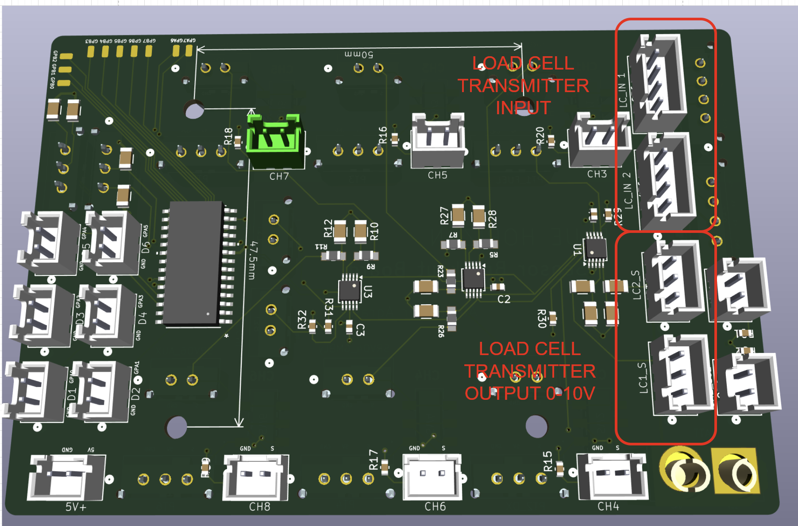

DAQ System#
System Overview#
This sensor acquisition system is designed to collect, condition, and digitize data from multiple instrumentation sources used in propulsion and fluid system testing. The system supports a range of analog sensors, including load cells, pressure transducers, and position-related servo sensors, and provides structured pathways for both high-resolution data logging and real-time microcontroller access.
Core Functionality#
The system performs the following primary functions:
Sensor Data Acquisition
Accepts analog inputs from:Load cells (e.g., engine thrust measurement, propellant tank weight)
Pressure transducers (e.g., nitrous oxide and fuel system pressures)
Servo-based position sensors (e.g., tank fill valve position verification, engine gimbal axis position)
Signal Routing and Digitization
Routes analog sensor signals to a DATAQ WINDAQ system for visualization, recording, and storage (including SD card logging).
Simultaneously routes selected critical signals (load cells, fuel and NOx pressures, and servo positions) through an ADS1115 ADC, enabling digitization for embedded processing.
Microcontroller Integration
Provides access to digitized sensor data via an I²C interface to a Teensy microcontroller, enabling real-time monitoring, control logic, and downstream processing.
Event Timing Capture
Accepts digital input signals to log key event markers (e.g., valve actuation start times or other test events), allowing synchronization between sensor data and system actions.
System Scope and Limitations#
This system is intended for data acquisition and monitoring purposes only. It is important to clearly define what the system does not do:
No Closed-Loop Control
The system does not directly control actuators, valves, or engines. It provides data for monitoring and analysis but does not execute control logic autonomously.No Sensor Calibration or Compensation
Calibration of load cells, pressure transducers, and servo sensors must be performed externally. The system assumes properly conditioned and calibrated input signals.No High-Level Data Processing or Interpretation
The system does not perform advanced analytics, filtering, or decision-making beyond basic digitization and routing. Any such processing must be implemented on the connected microcontroller or external systems.
Connecting It Up#




One servo input should be connected to the base battery voltage for the servos to determine the servo’s position.

Connect the I2C data lines to the Teensy.
Data Flow Overview#
This section describes how sensor signals propagate through the system, from physical measurement to digitization and logging. The system supports parallel data paths for both high-resolution logging (WINDAQ) and embedded processing via ADCs and a microcontroller.
1. Load Cell Signal Flow#
The system includes two load cells used for propulsion testing:
Engine Thrust Load Cell
NOx Tank Weight Load Cell
Signal Path#
Sensor Output
Each load cell produces a low-level differential signal proportional to force.
Signal Amplification
Signals are routed into external load cell transmitters.
These transmitters amplify and condition the signal to a 0–10V analog output.
WINDAQ Routing
The amplified signals are routed directly to the DATAQ WINDAQ system:
Channel 1 (CH1): Engine thrust load cell
Channel 2 (CH2): NOx tank weight load cell
ADC Path (Parallel)
The same signals are routed through voltage dividers to scale them from 0–10V down to 0–5V.
These scaled signals are then fed into ADC1 using the ADS1115 ADC.
Summary#
WINDAQ path: High-range analog logging (0–10V)
ADC path: Scaled digital measurement for embedded processing
2. Pressure Transducer (PT) Signal Flow#
The system supports up to six pressure transducers (PTs).
Primary PTs#
Fuel Tank Pressure
NOx Tank Pressure
Optional PTs#
Chamber Pressure
NOx Fill Tank Pressure
Additional auxiliary PTs (up to 6 total)
Signal Characteristics#
Output range: 0–5V (max)
No voltage scaling required for ADC input
Signal Path#
Sensor Output
PTs produce analog voltage proportional to pressure (0–5V).
Toggle Switch Routing
Each PT is routed through one of six toggle switches.
Each switch selects whether a PT or a servo signal is sent to a given WINDAQ channel.
WINDAQ Input
Selected PT signals are routed to the DATAQ WINDAQ system via the toggle switch configuration.
ADC Path (Parallel)
The two primary PTs (Fuel and NOx) are also routed directly (no scaling required) into ADC1 on the ADS1115 ADC.
3. Servo Position Signal Flow#
Servo signals are used to measure actuator positions in the system.
Primary Servo Signals#
Fuel Fill Valve Position
NOx Fill Valve Position
Engine Gimbal X-Axis Position
Engine Gimbal Y-Axis Position
Additional Servo Inputs#
Up to 6 total servo channels supported
One channel should be reserved for:
Servo Supply Voltage (Battery Reference)
Signal Characteristics#
Servo feedback voltage: up to ~8.4V
Must be scaled before ADC input
Signal Path#
Sensor Output
Servo position sensors output an analog voltage proportional to position.
Toggle Switch Routing (WINDAQ)
Signals are routed through the 6 toggle switches.
Typically assigned:
Channels 3–6 → Primary servo signals
WINDAQ Input
Selected servo signals are routed to the DATAQ WINDAQ system.
ADC Path (Parallel)
Signals are passed through voltage dividers to scale from ~8.4V → 0–5V.
Routed into ADCs as follows:
ADC2: Servo channels 1–4
ADC3: Servo channels 5–6
Reference Voltage Measurement
One servo input channel is reserved for measuring the servo supply voltage (battery).
This enables calculation of true servo position using:
Ratio of signal voltage to supply voltage
4. ADC Architecture and I²C Data Flow#
The system uses three independent ADC modules based on the ADS1115 ADC.
ADC Configuration#
ADC1
Load cell signals (scaled 0–5V)
Primary PT signals (direct 0–5V)
ADC2
Servo signals 1–4 (scaled)
ADC3
Servo signals 5–6 (scaled)
Two auxiliary 0–5V analog inputs (expandable for PTs or other sensors)
I²C Communication#
All three ADCs share a common I²C bus
Each ADC is assigned a unique address
Data is read by the Teensy microcontroller
Data Flow#
Analog signals → ADC conversion
Digital values transmitted over I²C
Teensy reads and processes sensor data in real time
5. WINDAQ vs ADC Data Paths (Key Concept)#
A critical feature of this system is parallel data paths:
WINDAQ Path#
Direct analog signals (0–10V or 0–5V)
Used for:
High-resolution logging
Visualization
Post-test analysis
ADC + Teensy Path#
Digitized signals via ADS1115
Used for:
Real-time monitoring
Control logic (external)
Event correlation
6. Key Design Notes#
Voltage dividers are used wherever signal levels exceed ADC limits (5V max).
Toggle switches provide flexible routing between PTs and servo signals into WINDAQ channels.
Load cell signals require amplification before entering the system.
Servo position accuracy depends on measuring both signal voltage and supply voltage.
Digital Event Timing and GPIO Expansion#
To enable precise time correlation between physical events and recorded sensor data, the system includes a digital signaling pathway from the Teensy microcontroller to the WINDAQ system. This allows key events—such as valve actuation or system state changes—to be logged alongside analog sensor data.
Purpose#
The digital event system is used to:
Mark the start time of valve actuations (e.g., fuel or NOx fill valves)
Record notable test events (e.g., ignition command, shutdown trigger)
Provide synchronization markers within the recorded dataset
These signals appear as digital channels in the DATAQ WINDAQ system, allowing them to be aligned with analog sensor measurements during analysis.
System Architecture#
Digital outputs are generated by the Teensy microcontroller and routed through an I²C-based GPIO expansion device:
GPIO Expander: MCP23017T
Communication Protocol: I²C
Function: Expands the number of available digital output pins beyond those natively available on the Teensy
Signal Flow#
Event Trigger (Teensy)
The Teensy sets a digital output HIGH or LOW in response to a programmed event (e.g., valve open command).
I²C Transmission
The signal is sent over the I²C bus to the MCP23017T.
GPIO Output
The GPIO expander drives the corresponding output pin.
WINDAQ Input
The output signal is routed into a digital input channel on the DATAQ WINDAQ system.
The signal is recorded and timestamped alongside analog data and stored (e.g., on SD card).
Channel Mapping#
The GPIO expander provides multiple digital outputs, but only a subset are routed to the WINDAQ system.
Connected Outputs (Active Use)#
The following pins are connected to WINDAQ digital input channels:
GPIO Pin |
WINDAQ Channel |
|---|---|
GPA0 |
D1 |
GPA1 |
D2 |
GPA2 |
D3 |
GPA3 |
D4 |
GPA4 |
D5 |
GPA5 |
D6 |
These six channels represent the primary digital event markers.
Additional Available Outputs (Not Pre-Wired)#
The GPIO expander provides additional pins that are not directly connected to WINDAQ but are exposed via solder pads on the PCB:
GPA6, GPA7
GPB0 – GPB7
These pins:
Are available for future expansion or custom wiring
Can be manually connected to additional systems if needed
Provide flexibility for extended instrumentation or debugging
Key Design Notes#
The GPIO expander supports up to 16 total digital I/O pins, though only 6 are currently utilized for WINDAQ integration.
All digital event signals are binary (HIGH/LOW) and intended for timing correlation, not analog measurement.
The system enables precise synchronization between:
Analog sensor data (load cells, PTs, servos)
Discrete system events (valve commands, triggers)
More On ADS1115 (Analog-to-Digital Converter)#
The ADS1115 converts analog voltages (from the voltage dividers) into digital values that the Teensy reads over I²C.
How Inputs Are Used#
The ADS1115 has 4 input pins (AIN0–AIN3)
Although it supports differential measurements, this system uses single-ended mode
I²C Addressing (Important)#
Each ADS1115 must have a unique address set by the ADDR pin.
ADDR Pin Connection |
Address |
|
|---|---|---|
GND |
0x48 |
|
VIN |
0x49 |
|
SCL |
0x4A |
Input Voltage Limits (Critical)#
The ADC cannot read voltages above its configured range
Inputs must stay within the selected full-scale range (FSR)
Practical guidance:
Your voltage dividers scale signals to ≤ 5V
Set the ADC range to:
±6.144V (safest) or
±4.096V (better resolution, but less headroom)
➡️ If unsure, use ±6.144V to avoid clipping
Channel Sampling Behavior#
The ADS1115 reads one channel at a time (multiplexed)
When reading multiple inputs:
The ADC cycles through them sequentially
➡️ Expect a small delay between channel readings
➡️ Not all channels are sampled simultaneously
Stability of Readings#
The ADC does not internally pull inputs up or down
Floating inputs will produce unstable values
This board already solves this by including:
Voltage dividers
Pulldown resistors
➡️ No additional work required unless modifying the design
What You May Need to Configure#
Gain / voltage range (FSR)
Which channel (AIN0–AIN3) you are reading